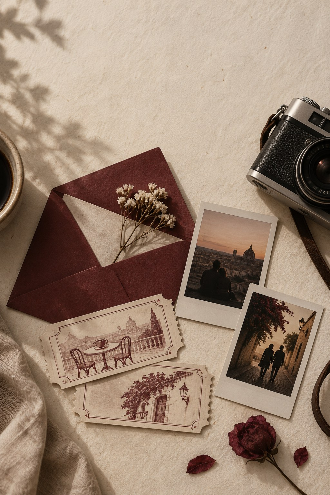
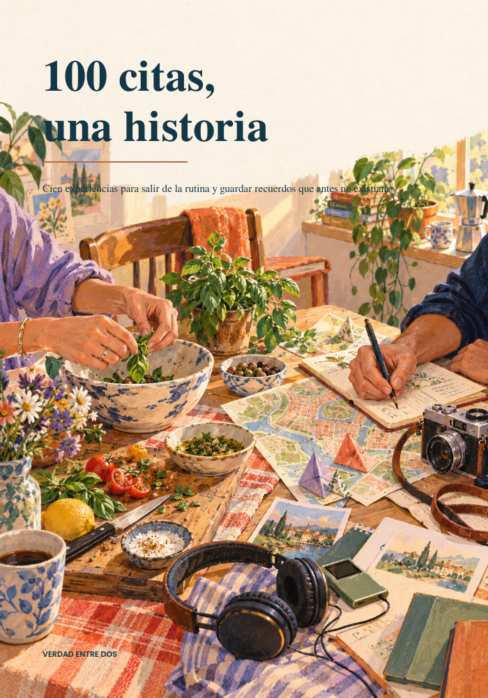

Que decida la moneda
Una vuelta por el barrio, elegida al vuelo.
Una colección gratuita para dos
EL BUZÓNRECURSOS GRATUITOS N.º 01
Una pequeña colección para volver a encontrarse en medio de los días de siempre.
Cinco experiencias para salir de la rutina y volver a disfrutar de nosotros.
PDF directo · Sin registro · Guárdalo para cuando quieran

5 CITAS, 5 RECUERDOSUNA CITA A LA VEZ 01—05
Un pasaporte de cinco citas para vivir en pareja y guardar un recuerdo distinto de cada una. Pueden leerlo desde el teléfono o imprimir sus páginas para completarlas a mano.
SIN PRISA, A SU MANERA
Elijan el momento que les llame, adapten lo que haga falta y quédense con lo que se sienta suyo.
Pueden ir en orden, escoger al azar o guardar una cita para el día que mejor le siente.
Las duraciones y los presupuestos son orientativos. Cambien el lugar o los materiales para que funcione en su realidad.
Ninguna consigna es un examen. Si algo no les acomoda, pásenlo, modifíquenlo o terminen la cita de otra forma.
POSDATA Este buzón empieza con una colección. Otras ideas encontrarán su momento.
PARA SEGUIR DESCUBRIÉNDOSE
Salgan de la rutina, descubran algo nuevo del otro y encuentren más formas de compartir. 100 citas, una historia, para vivirlas a su manera.
Conoce las 100 citasUna invitación abierta; cada pareja escribe su propio ritmo.

Una vuelta por el barrio, elegida al vuelo.
Un territorio compartido, dibujado entre los dos.
Dos canciones y las historias que despiertan.